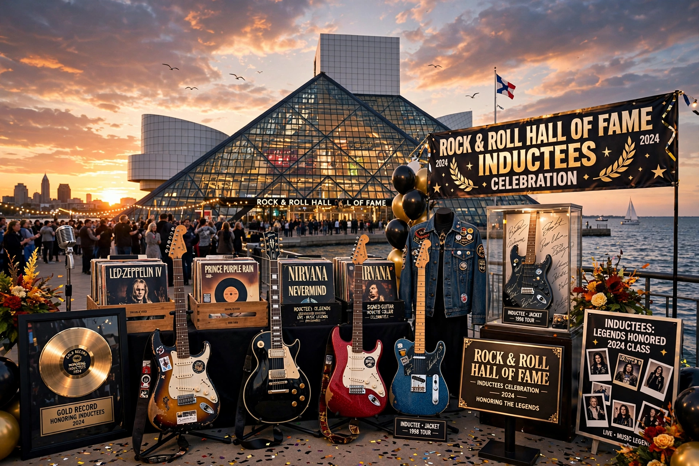

List of Rock and Roll Hall of Fame inductees

Museum opened in Cleveland in 1995; first induction ceremony 1986.
The Rock and Roll Hall of Fame inducts artists, producers, engineers and other notable figures who have had a major influence on rock and roll. Artists become eligible 25 years after their first commercial recording.
First class (1986)
Chuck Berry, James Brown, Ray Charles, Sam Cooke, Fats Domino, The Everly Brothers, Buddy Holly, Jerry Lee Lewis, Little Richard, and Elvis Presley.
Selected later inductees
- 1987: The Beach Boys era peers incl. Aretha Franklin (first woman inducted), Muddy Waters, B.B. King
- 1988: The Beatles, Bob Dylan, The Beach Boys, The Supremes
- 1992: Johnny Cash, The Jimi Hendrix Experience
- 1994: John Lennon (solo), Elton John, Grateful Dead
- 1995: Led Zeppelin, Neil Young, Janis Joplin
- 2000: Eric Clapton, Earth, Wind & Fire
- 2004: Prince, Bob Seger, ZZ Top
- 2010: ABBA, Genesis, The Hollies
- 2014: Nirvana, Kiss, Peter Gabriel
- 2016: Deep Purple, Cheap Trick, Chicago
- 2019: The Cure, Radiohead, Janet Jackson, Stevie Nicks
- 2021: Tina Turner (solo), Foo Fighters, Jay-Z
- 2022: Eminem, Dolly Parton, Lionel Richie, Duran Duran
- 2023: Kate Bush, Rage Against the Machine, Missy Elliott
- 2024: Mary J. Blige, Cher, Ozzy Osbourne, Foreigner
Categories include Performers, Early/Musical Influence, Non-Performer (Ahmet Ertegun Award), and Musical Excellence. See Rock and Roll Hall of Fame.